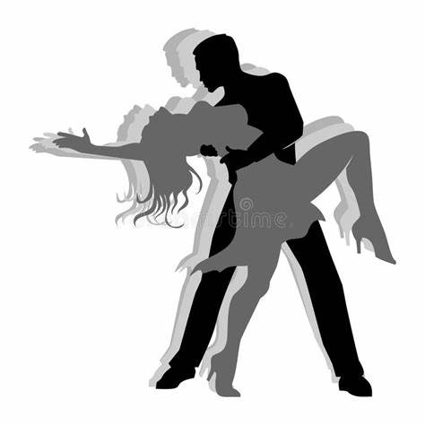

Manual para bailar bachata - Guia para aprender pasos de bachata

Manual de como aprender a bailar bachata
historia de la bachata
La bachata es una música de guitarra popular de la República Dominicana, hoy en día de manera abrumadora ha ganado auge entre los latinos que viven en los Estados Unidos. La bachata tomó forma a lo largo de un periodo de al menos cuarenta años en los bares y burdeles de Santo Domingo, sin ganar aceptación en su tierra natal hasta al menos hace diez años. Grupos jóvenes como Aventura tienen una relación casi directa con la bachata original, similar a la relación de los rock and rolleros con el blues.
Encantos de la bachata
¿Qué emociones transmite la bachata?
Se caracteriza por ser muy sensual y porque es la forma en la que muchas personas de la República Dominicana expresan sus emociones. Este baile, junto con su característica música, intenta transmitir alegría, romanticismo y, en ocasiones, también tristeza.
Mi sitio web esta hecho con la intención de ayudar a todas esas personas que quieren aprender a bailar bachata pero no saben por dónde empezar.
Mi sitio web cuenta con imágenes, textos informativos sobre los diferentes pasos y videos tutoriales
El paso básico para bailar bachata es divertido y sencillo. Este movimiento consiste de tres pasos y un toque con la planta del pie. Estos cuatro movimientos se ejecutan en un ritmo 4/4. Los tres pasos se bailan en los primeros tres tiempos y el toque de pie en el cuarto tiempo.
aprendiendo un par de giros, podrás bailar bachata en cualquier lugar en el que suene su melodía. Como te imaginarás se trata de girar, sobre uno mismo, en el mismo tiempo que dura un básico, es decir, cuatro pulsaciones. El giro puede ser tanto a la derecha como a la izquierda para los dos miembros de la pareja. Los giros pueden ser desplazados o en el sitio.
¿Y qué hago con las manos, te habrás preguntado? En el básico abierto, los dos miembros de la pareja están separados. Cogidos de las manos: la mujer pone sus manos sobre las del hombre (o quien haga el rol de hombre), y es este el que guía el movimiento, desplazando ligeramente la mano a la izquierda, es decir, la derecha de su acompañante. Esta modalidad de básico abierto, sirve tanto para el básico desplazado como en el sitio.
La mano izquierda del hombre sigue siendo la que guía, pero hay libertad en cuanto donde ponerla, la derecha estará en la cintura de la mujer. Los pasos siguen siendo los mismo en lo que a los pies se refiere, lo que cambia es la cercanía de los cuerpos.